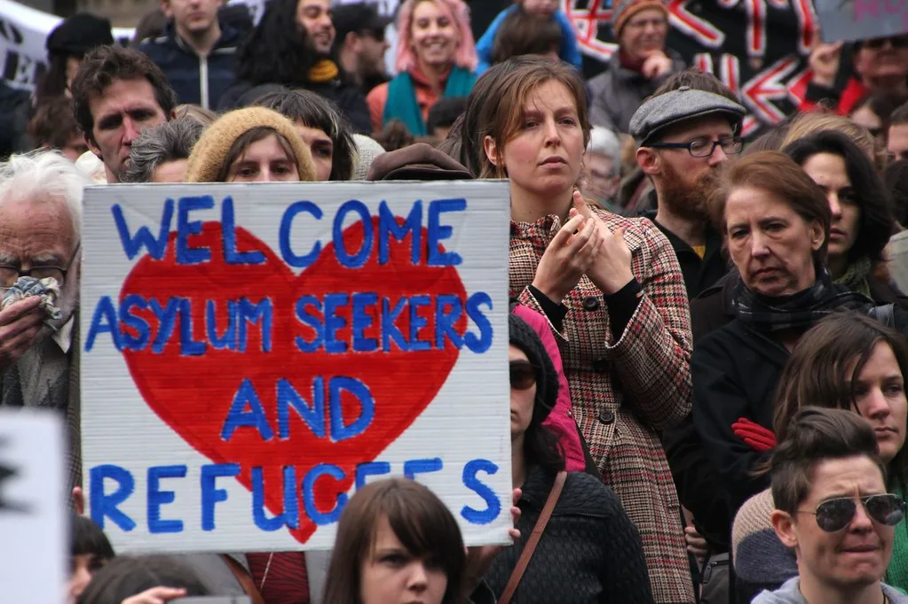
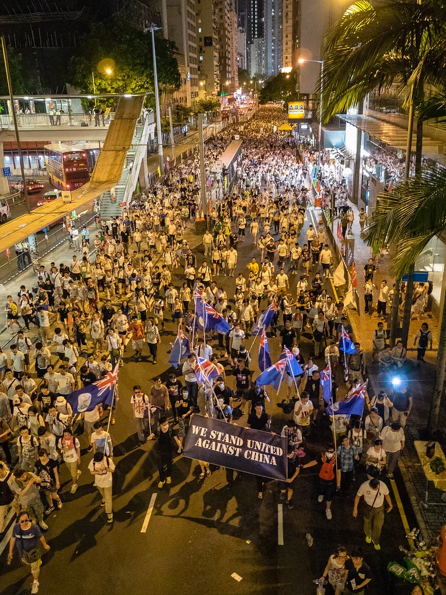

국민의힘, 1년 만에 숭례문 장외집회…국감 D-2 앞두고 세 과시
국민의힘이 개천절인 지난 3일 서울 숭례문 앞에서 '이재명 정권 심판 민생회복·안보수호 국민행동대회'를 열었다. 1년 만에 재개된 대규모 장외집회로, 오는 6일 국회 국정감사가 시작되는 시점을 겨냥해 정부·여당을 향한 경고성 메시지를 발신하고 당 지지층의 결집을 꾀하려는 의도로 풀이된다. 장동혁 대표와 정점식 원내대표 등 당 지도부를 포함해 현역 의원 70여 명이 집회에 참석해 세를 과시했다.
집회 규모를 둘러싼 셈법은 엇갈렸다. 당 측은 "총 20만 명가량이 모였다"고 주장했지만, 경찰의 비공식 추산 인원은 약 9000명 수준에 그쳤다. 주최 측 추산과 현장 추산 사이의 간극이 워낙 커, 집회의 실제 동원력을 둘러싼 해석도 분분한 상황이다. 당 지도부는 그럼에도 이번 집회를 통해 지지층 결집과 대여 공세의 분위기를 끌어올렸다는 데 의미를 두는 분위기다.
이날 지도부는 검찰청 폐지에 이은 형사사법체계 개편, 비무장지대(DMZ) 지뢰 폭발 사고, 부동산·민생 문제 등을 고리로 정부를 겨냥했다. 참석자들은 '안보 참사 굴욕외교 이재명을 규탄한다', '눈만 뜨면 법원 겁박 사법 독립 보장하라' 등의 구호를 외쳤다. 대장동 사건의 '키맨'으로 지목된 유동규 전 성남도시개발공사 기획본부장도 연설자로 나서 "이재명은 법원에서 공식 인정한 거짓말쟁이다. 반드시 재판받아야 한다"고 주장해 눈길을 끌었다.

다만 당 내부에서조차 국감을 불과 사흘 앞두고 대규모 장외집회를 강행한 결정에 대해 신중론이 제기된 것으로 알려졌다. "환장할 노릇"이라는 격한 반응이 나왔을 정도로, 국감 준비에 역량을 집중해야 할 시점에 장외 투쟁 카드를 꺼내 든 것이 전략적으로 적절했는지를 둘러싼 내부 이견이 노출됐다. 집회 현장에서도 지도부가 "하나 된 국민의힘"을 외치자 일부 참석자들 사이에서 "꺼져라"라는 야유가 터져 나오는 등 당내 갈등의 단면이 그대로 드러났다는 평가도 나온다.

민주당은 이번 집회를 두고 "국정감사를 앞두고 세 과시에 나선 것"이라고 비판했다. 여야 간 공방이 이어지는 가운데, 국민의힘은 6일부터 시작되는 국정감사에서 인사 개입 의혹과 단일종목 레버리지 상장지수펀드(ETF) 도입 과정, 새 형사사법체계 시행에 따른 수사 공백 등을 '3대 전선'으로 삼아 정부·여당을 전면 압박할 방침이라고 밝혔다. 당은 관련 증인 신청과 자료 요구를 이미 마쳤으며, 국감 기간 내내 이 세 가지 의제를 중심으로 공세의 강도를 끌어올리겠다는 계획이다.
국감 첫날인 6일에는 법제사법위원회의 대법원 감사와 외교통일위원회의 외교부 감사 등이 예정돼 있다. 장외집회로 결집을 꾀한 국민의힘이 실제 국감장에서 어느 정도의 공세를 끌어낼 수 있을지, 그리고 정부·여당이 이에 어떻게 대응할지가 이번 정기국회 정국의 분수령이 될 것으로 전망된다.
정치권에서는 이번 집회가 국감 정국의 전초전 성격을 띠는 만큼, 앞으로 한 달가량 이어질 국감 기간 내내 여야 간 격한 공방이 예고된다는 분석이 나온다. 국민의힘이 장외 투쟁과 국감장 공세를 병행하는 '양면 전략'을 택한 가운데, 이 전략이 실제 여론의 지지를 끌어내는 데 성공할지, 아니면 내부 균열을 더 키우는 결과로 이어질지가 향후 정국의 핵심 관전 포인트로 꼽힌다.